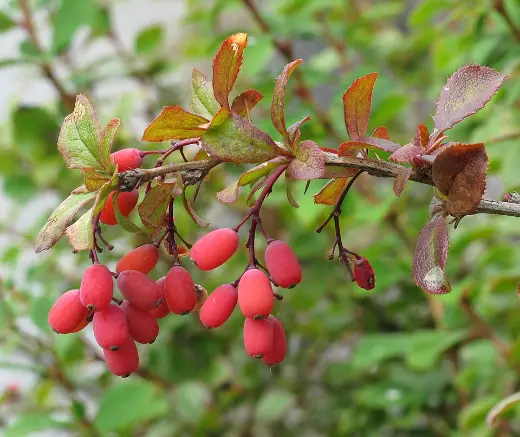
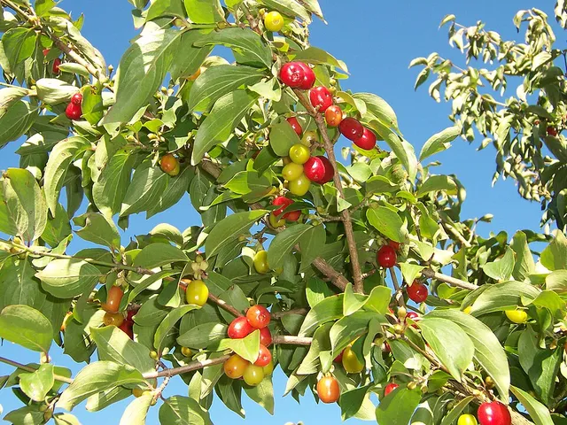

Wild plants you can forage in Germany
48 wild greens, berries, nuts, roots and flowers, with when each is in season, where it grows, how to harvest it and what to cook.
Greens
 ChickweedMar–Nov
ChickweedMar–Nov Common sorrelApr–Aug
Common sorrelApr–Aug DandelionMar–Oct
DandelionMar–Oct Fat henMay–Sep
Fat henMay–Sep Garlic mustardMar–Jun
Garlic mustardMar–Jun Good King HenryApr–Jul
Good King HenryApr–Jul Ground elderMar–Jun
Ground elderMar–Jun Marsh samphireJun–Aug
Marsh samphireJun–Aug Ribwort plantainApr–Sep
Ribwort plantainApr–Sep Sea beetMar–Oct
Sea beetMar–Oct Spruce tipsMay–Jun
Spruce tipsMay–Jun Stinging nettleMar–Jun
Stinging nettleMar–Jun WatercressMar–Oct
WatercressMar–Oct Wild garlicMar–May
Wild garlicMar–May Wood sorrelApr–Sep
Wood sorrelApr–Sep
Fruit & berries

BarberrySep–Oct BilberryJul–Aug
BilberryJul–Aug BlackberryAug–Sep
BlackberryAug–Sep Bog cranberrySep–Oct
Bog cranberrySep–Oct
Cornelian cherryAug–Sep Crab appleSep–Oct
Crab appleSep–Oct ElderberryAug–Sep
ElderberryAug–Sep HawthornSep–Oct
HawthornSep–Oct Juniper berriesSep–Nov
Juniper berriesSep–Nov LingonberryAug–Oct
LingonberryAug–Oct Rose hipsSep–Nov
Rose hipsSep–Nov Rowan berriesAug–Oct
Rowan berriesAug–Oct Sea buckthornAug–Oct
Sea buckthornAug–Oct SloeSep–Nov
SloeSep–Nov Wild blackcurrantJul–Aug
Wild blackcurrantJul–Aug Wild gooseberryJun–Jul
Wild gooseberryJun–Jul Wild raspberryJul–Aug
Wild raspberryJul–Aug Wild strawberryJun–Jul
Wild strawberryJun–Jul
 Burdock rootApr–Oct
Burdock rootApr–Oct Hop shootsMar–May
Hop shootsMar–May Blue musselsJan–Dec
Blue musselsJan–Dec BeechnutSep–Oct
BeechnutSep–Oct HazelnutAug–Oct
HazelnutAug–Oct Sweet chestnutOct–Nov
Sweet chestnutOct–Nov WalnutSep–Oct
WalnutSep–Oct Lime blossomJun–Jul
Lime blossomJun–Jul MeadowsweetJun–Aug
MeadowsweetJun–Aug Red cloverMay–Sep
Red cloverMay–Sep Wild chamomileJun–Aug
Wild chamomileJun–Aug YarrowJun–Sep
YarrowJun–Sep